Kardex Oficial
Este es mi Kardex Oficial, da click en la previsualización para abrir el PDF completo y ver todas sus hojas.
Algunos reconocimientos, diplomas, certificados y resultados a lo largo de mi carrera...
Este es mi Kardex Oficial, da click en la previsualización para abrir el PDF completo y ver todas sus hojas.
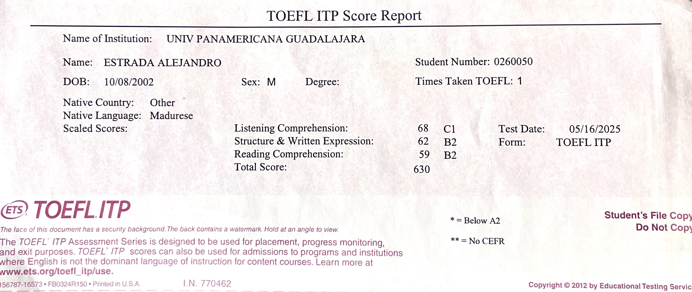
Examen TOEFL ITP realizado el 16 de mayo de 2025. Saqué un resultado nivel C1, con un puntaje de 630/677. Fue un resultado muy satisfactorio porque avala mi nivel de inglés y me permite seguir creciendo profesionalmente.
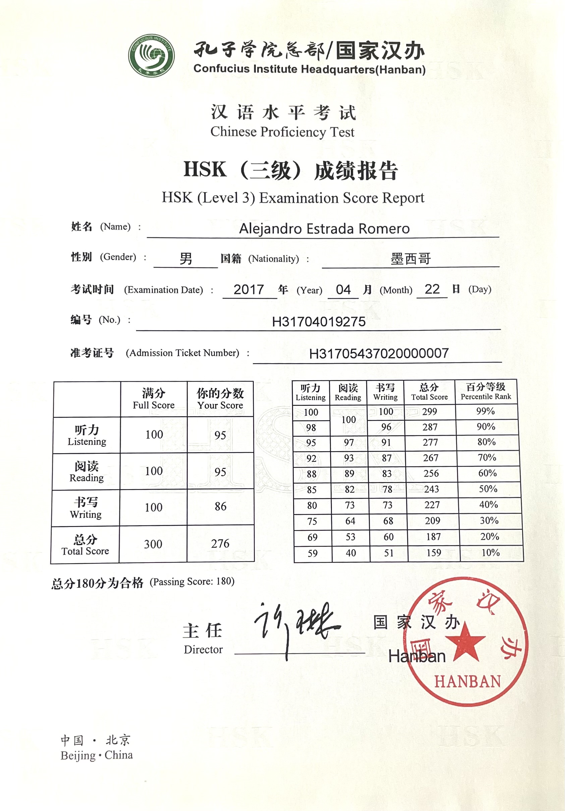
Si bien esta certificación no fue durante mi universidad, es un logro muy importante para mí. Logré sacar 276 puntos de 300 en la Certificación Hanyu Shuiping Kaoshi a mis 14 años, siendo de los resultados más altos aún cuando los demás eran estudiantes de preparatoria y universidad.
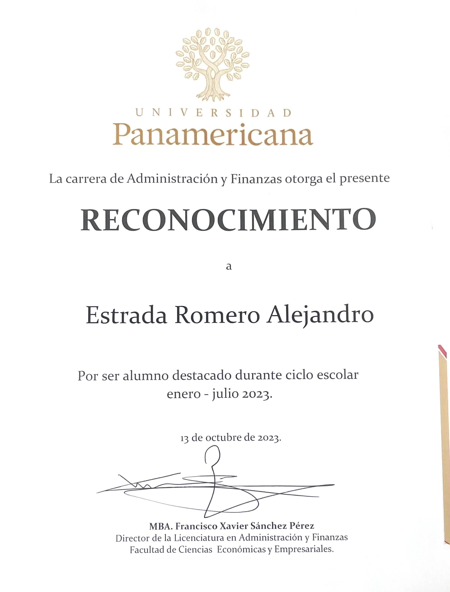
La universidad me premió por haber sacado promedio arriba de 95 en mi primer semestre de la Universidad. Este reconocimiento se otorga en una gala junto con los demás acreedores a este diploma, siendo alrededor de 50 personas entre todos los semestres de finanzas. De mi generación solamente fuimos 2 personas.
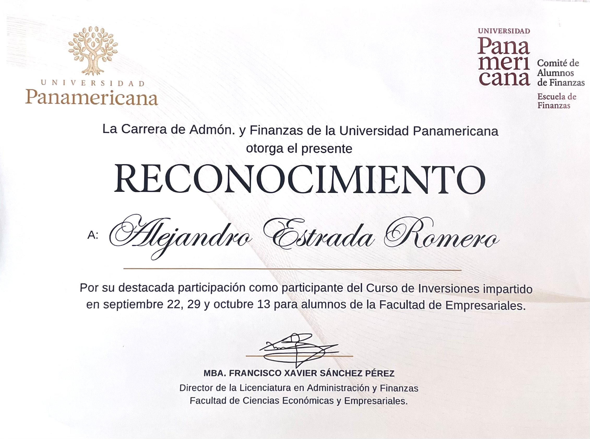
Participé en un curso impartido en la universidad junto con Aurex Capital. Pude aprender un poco sobre el manejo de la plataforma Think or Swim para el manejo de inversiones. Solamente lo cursamos alrededor de 20 personas.
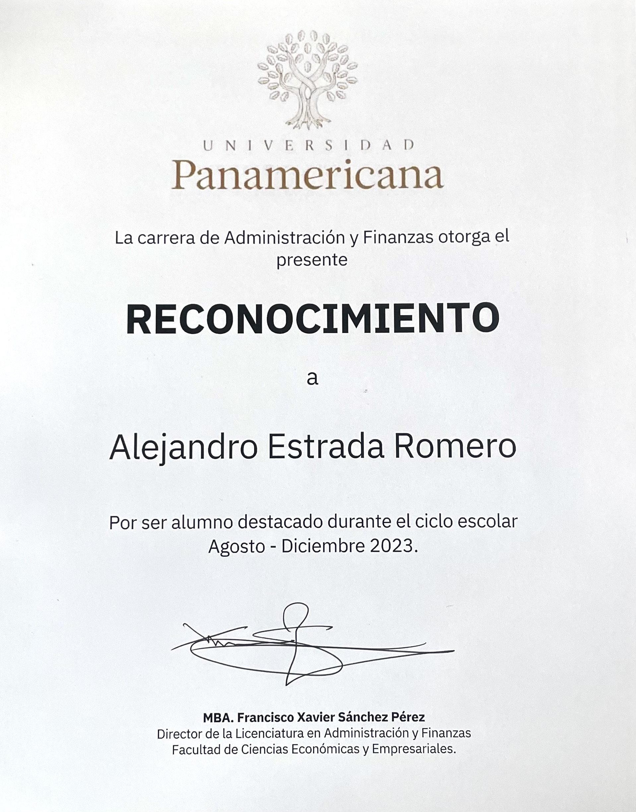
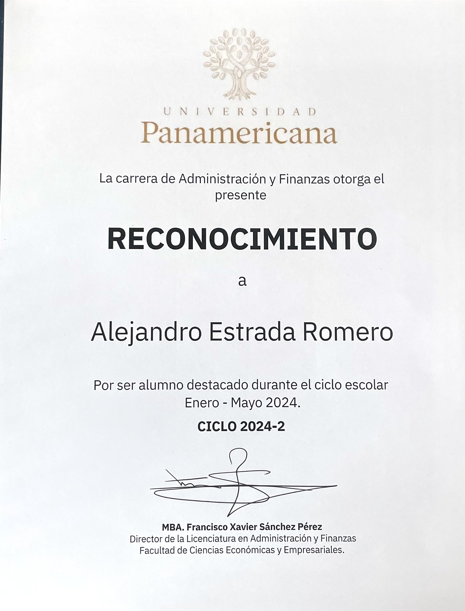
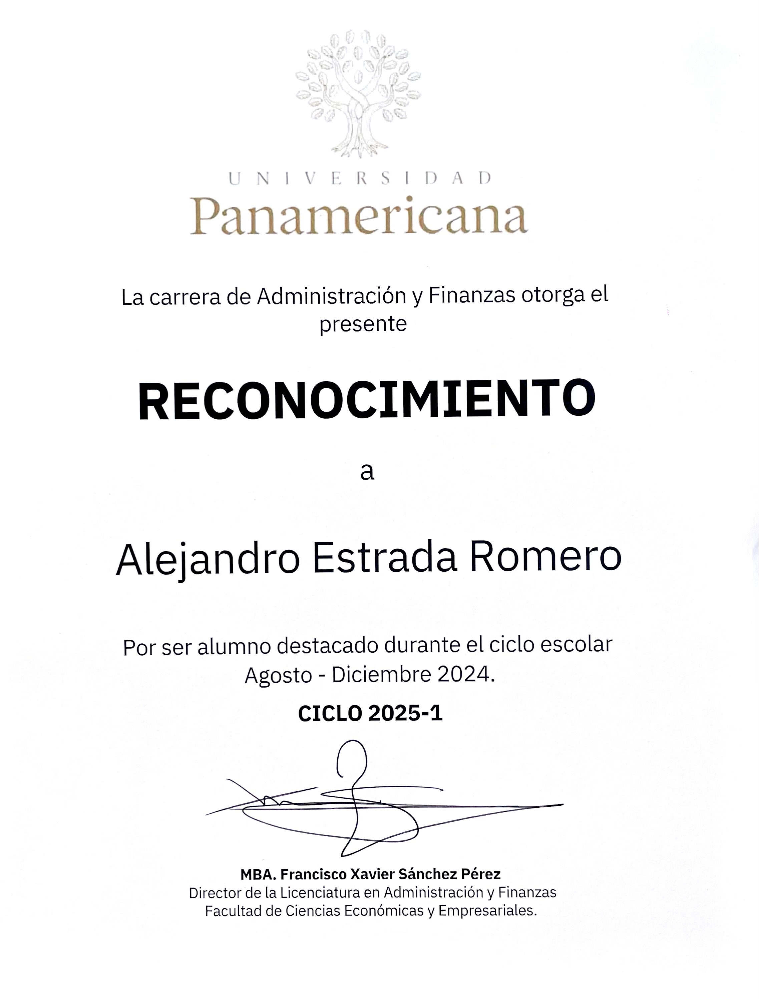
He ganado el reconocimiento de Alumno destacado también en segundo, tercer, cuarto y sexto semestre (este reconocimiento se entrega este 6 de Mayo de 2026). En estos eventos he tenido la oportunidad de conocer a otros alumnos que ponen todo su esfuerzo en sus estudios. Cabe destacar que de mi generación solamente vamos entre 2 a 3 alumnos, siendo yo uno de ellos.
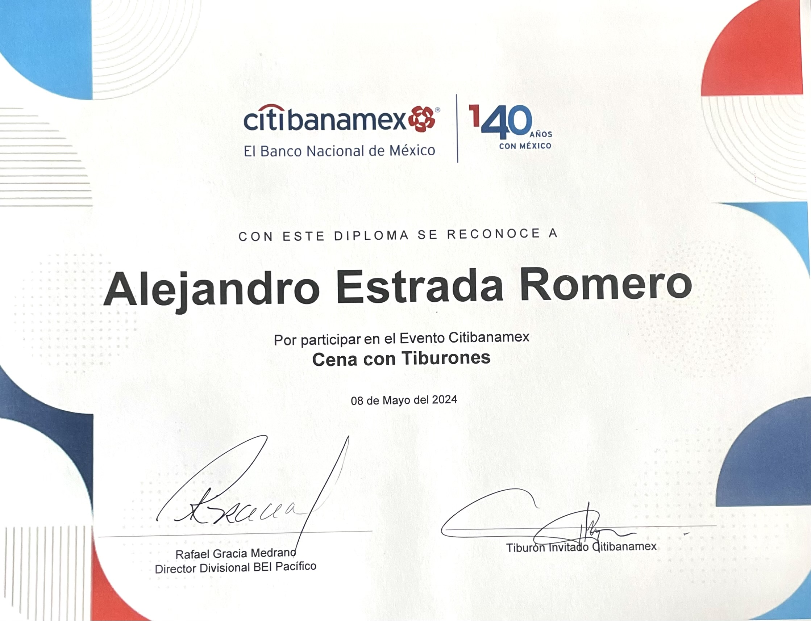
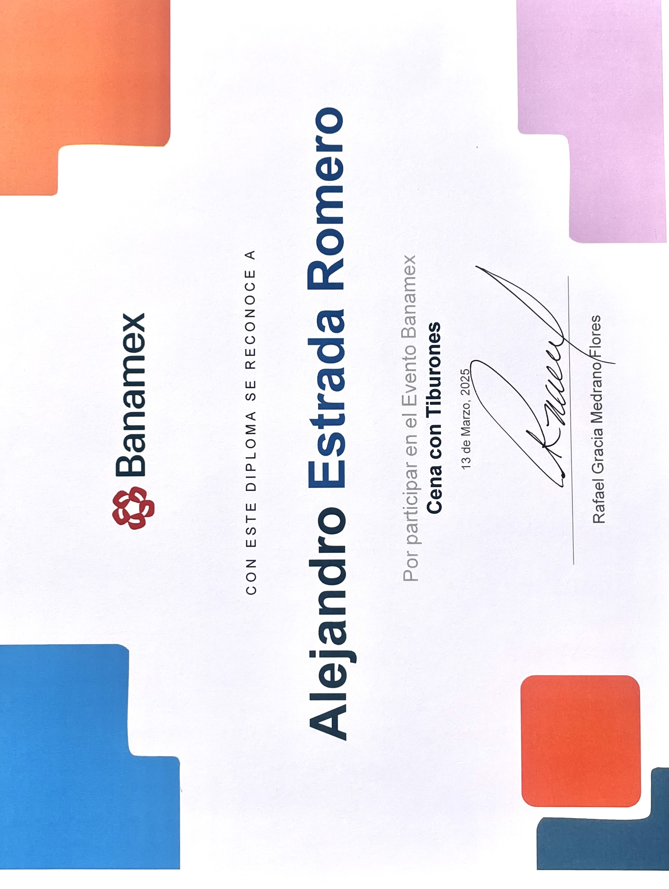
En estos eventos, he conocido a empresario de Jalisco que invitan para conocer un poco de su trayectoria y sus compañías. Es un evento de la mano de Banamex para reconocer a los alumnos más destacados de la carrera.
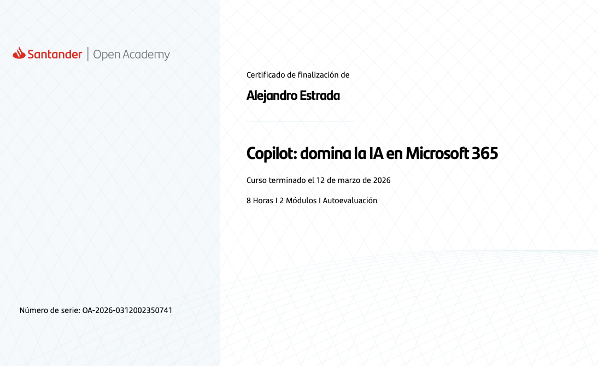
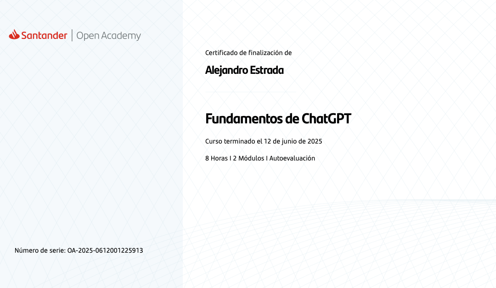
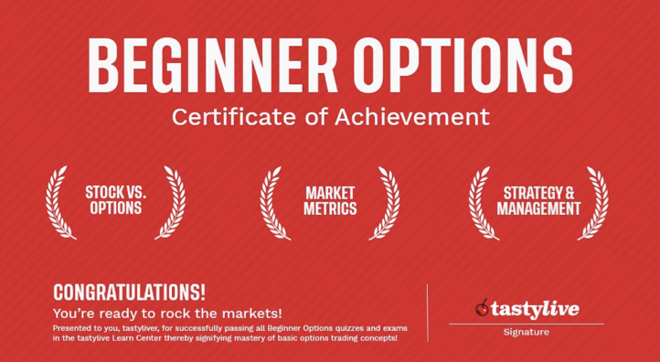
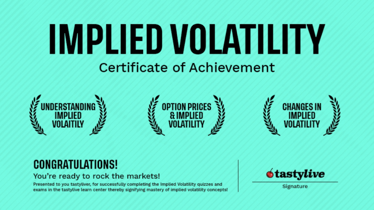
Estos son algunas certificaciones que he hecho en mi carrera, algunas en Santander Open Academy y otras en TastyLive. En estas certificaciones de Copilot y fundamentos de ChatGPT, he aprendido a optimizar procesos tanto en mi día a día como en el trabajo, sin olvidar que son herramientas y no fuentes confiables. Siempre checo lo que les pido y verifico la información. En las certificaciones de TastyLive aprendí sobre la volatilidad y sobre las opciones financieras; esto con el fin de aumentar mi conocimiento en la materia de Derivados Financieros.
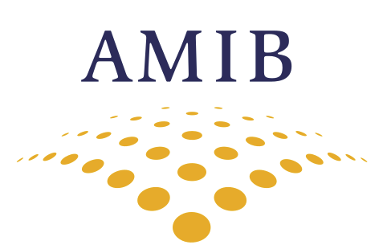
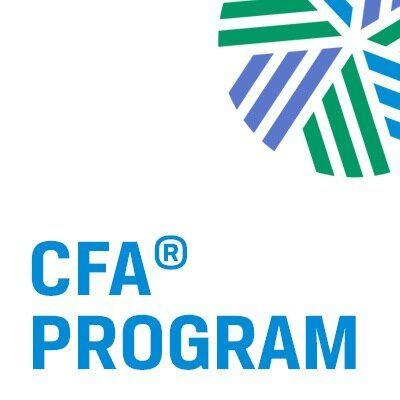
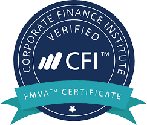
Actualmente me estoy preparando para hacer este verano la certificación AMIB figura III. Además, quiero realizar la certificación CFA, por lo que he empezado a leer y formar parte del equipo CFA Research Team, en el cual se participa en un concurso para valuar una empresa bajo los criterios internacionales. También, me gustaría obtener una certificación CFI en investment banking.